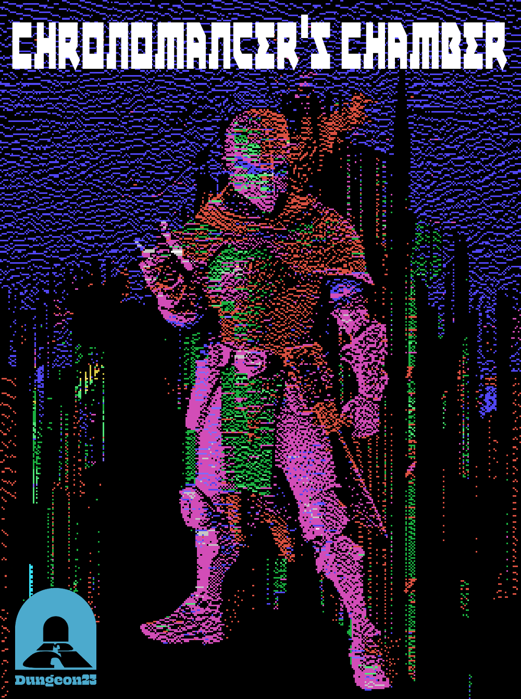
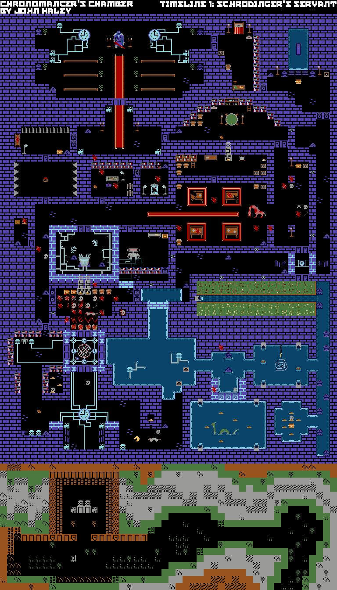
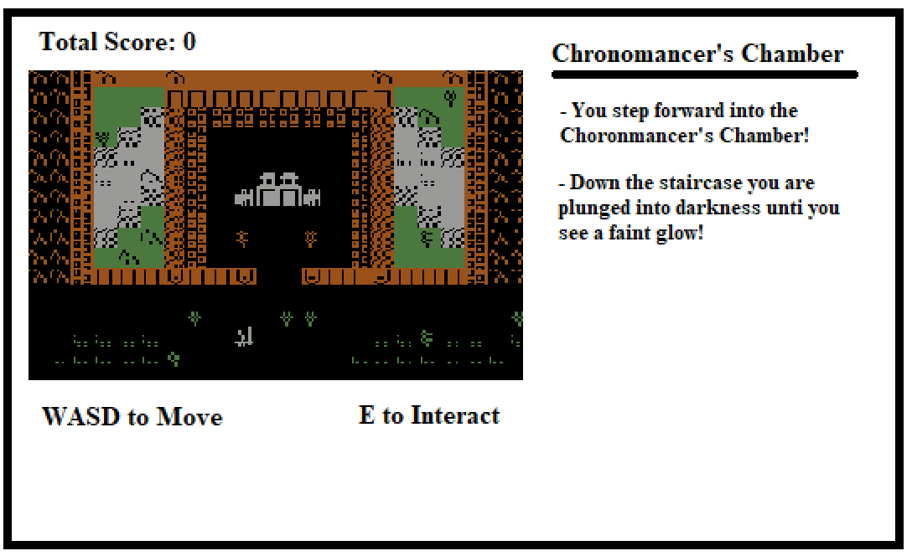
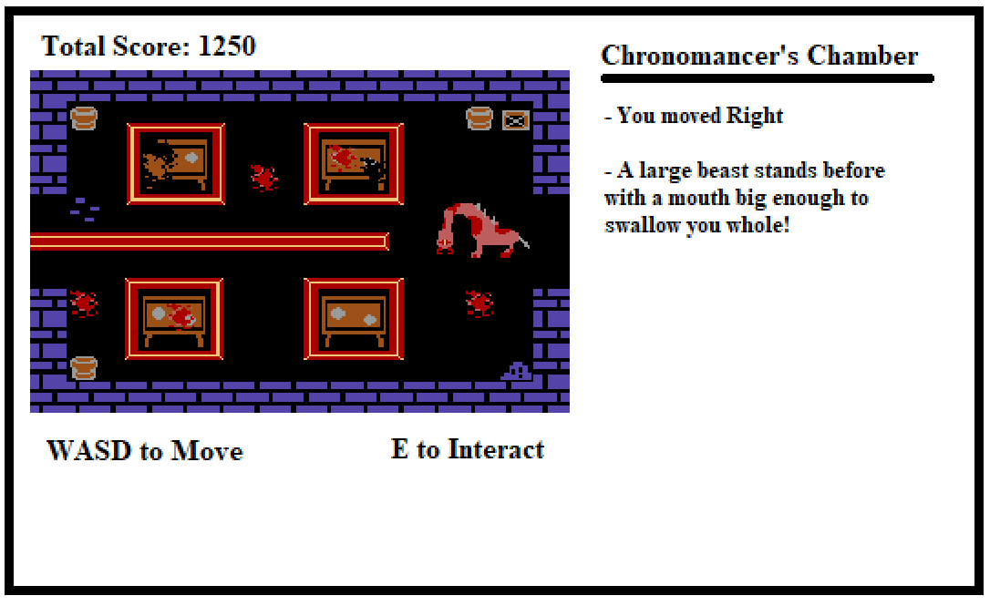

Chronomancer's Chamber | Project 3 Proposal
High Concept & Genre
Chronomancer's Chamber is a turn based adventure game based on a dungeon I made for the January Dungeon Jam under the same name.
Platform
Desktop only as I would like the player to move around with WASD and would like to recreate that old school adventure game look that I don't think other platforms can do very well.
Story
Chronomancer's Chamber takes place after a powerful wizard attempts to restore their old wronged past with the power of chronomancy, the school of magic involving the manipulation of time. Unfortunately, despite their countless attempts to undo their mistakes, they are unable to heal their past. Shifting the timeline back and forth in unimaginable ways only making it worse and worse. Until there is nothing left for the wizard to undo. Now all that remains is the ruins of an intricate dungeon. Fabled to still hold the power of time travel confined within a small chamber Will your team of adventures be the one to harness the power of chronomancy once more?
Esthetics
Graphics
Definitely going for retro style with each game tile being 16 by 16 pixels. I think it adds a lot of charm and will work well for the turn based adventure game style.
Audio
I really want to play this theme song made by @lootthebody in the background cause he liked my dungeon so much! Super cool to have someone be so inspired by my work that they make something themselves! Any other sound effects I add will be trying to fit the vibes of this song.
Gameplay
The gameplay should be fairly standard stuff with the player being able to walk around the dungeon and interact with objects they stand over. If they run into an enemey they automatically enter a fight with them. All of this info is then outputed to the screen as one big story for the player to follow. I really want to focus more on making fun little events appear and having a cool story unfold in front of the player's eyes. I wanna see how much of the campaign I wrote can be translated into gameplay haha.
Controls
Keyboard Only
- Movement: WASD
- Interact: E
Tutorial
I want the player to learn as they play so they will immediately be popped into the game with the controls displayed somewhere on screen near the game window.
Goal
So the end goal story-wise is to reclaim the chamber in the center of the dungeon. However, all the doors to this chamber is locked and that becomes obvious durring gameplay. As the player explores they should eventually meet the Chronomancer's last servant who is guarding the key to the chamber. After the player beats them and enters the chamber they beat the game.

Mockup Screenshots
 About the developer
My name is John Haley! I am a 2nd year game design and development major at RIT. I am obsessed with creating games with amazing worlds and systems. I am also a big fan of dungeons and dragons.